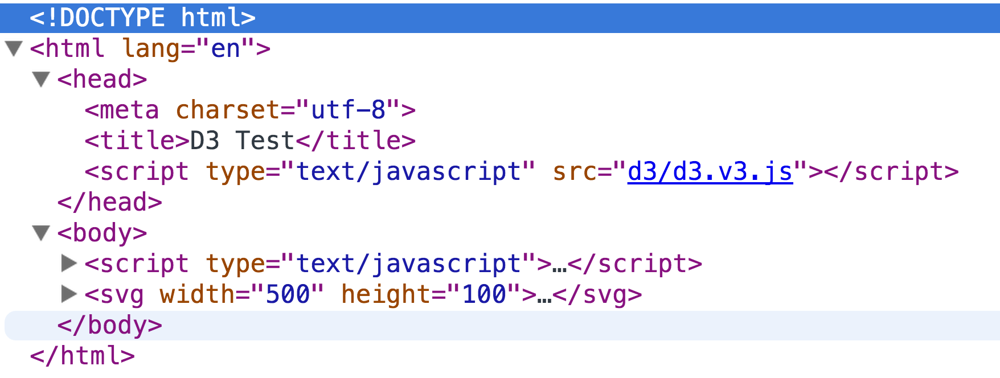
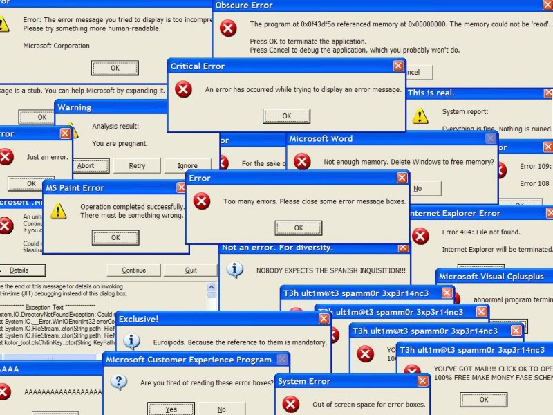

Today's agenda
- Testing your work
- Lecture: Guidelines for interactivity
- Lab and one-on-ones
Testing your work
- Text editors
Text editors
Source: New Republic
Testing your work
- Text editors
- How a web page is structured (the DOM)
The DOM
Testing your work
- Text editors
- How a web page is structured (the DOM)
- How to preview your project in a browser
- Debugging
Debugging
Today's agenda
- Testing your work
- Lecture: Guidelines for interactivity
- Lab and one-on-ones
Form follows function — that has been misunderstood. Form and function should be one, joined in a spiritual union.
—Frank Lloyd Wright
Ask yourself...
- Does the story require one complex graphic or several simpler graphics?
- Does interactivity make this story clearer? How?
- Are you creating art or communicating a story?
Principles of good interaction
The best interaction designs don’t exist: they don’t take a long time to load/respond; they don’t make users think; and they don’t give users cause for grief.
— Andrew Maier
Define interaction
- How are users likely to try to use your graphic?
- Are items clickable? Touchable?
- How does hover translate to mobile?
- What happens if a user tries to use keyboard commands (such as arrow keys to move through a slideshow)?
Digression: Affordances
Physical traits that give clues to how to use them.
Case study
Affordances online
Links take you places
Buttons handle data
Users will blame themselves for confusing affordances.

Use affordances well
- Do the shapes, colors and sizes of actionable items convey their purpose?
- Give users a "peek around the corner" — help them be confident in their choices.
- Be consistent.
Handle errors and missteps
- The Poka-Yoke Principle: Systems should be designed with constraints that prevent errors and unintended actions as they occur.
- Show grace to the user.
- Give feedback when applicable.
Experiment wisely.
- Don't be afraid to take risks.
- Apply the previous principles rigorously.
- Use familiar components to make it easy to learn how the system works.
- Articulate why breaking away from conventional graphics furthers the story.
The less common the graphic form I choose, the more redundancy I must include.
—Alberto Cairo
Telling a good story is about asking good questions
Today's agenda
- Testing your work
- Lecture: Guidelines for interactivity
- Lab and one-on-ones
Lab: Refining your project
- Sign up for a one-on-one slot.
- Using principles from last class' prototyping workshop, test your sketches on each other.
- Pick one of your sketches to test.
- Ask your tester how he thinks it works; what she thinks it says.
- Ask what questions your tester has. These could be unanswered questions about the subject or uncertainties about function.
- Take notes, sketch if necessary, and rotate partners.